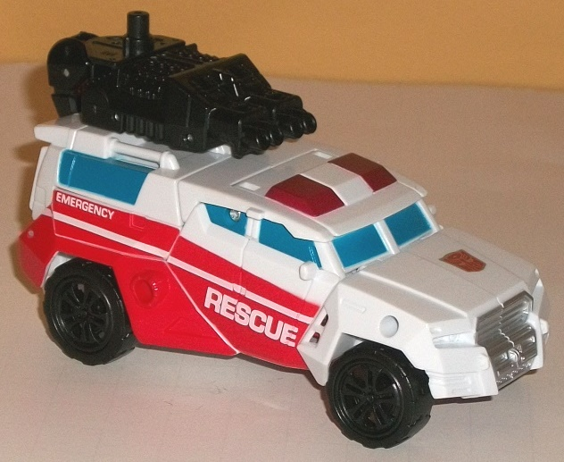
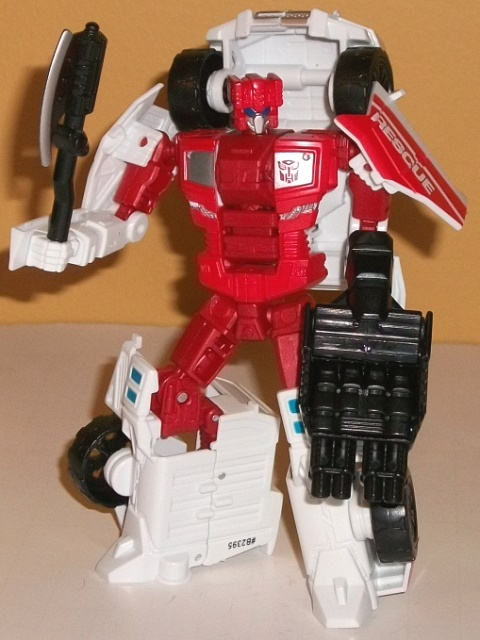
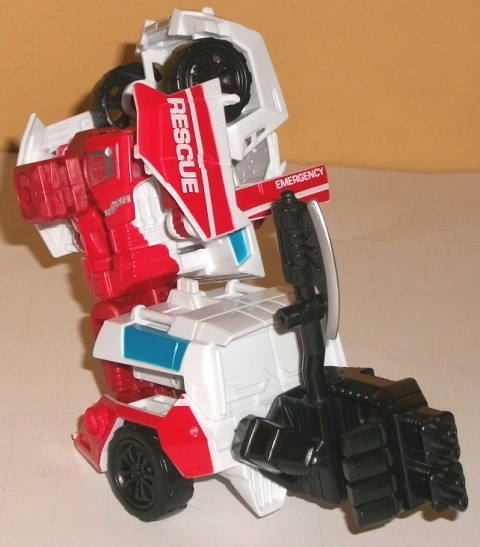
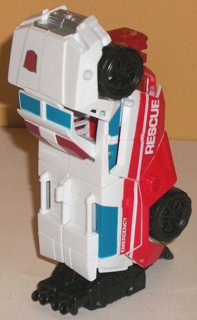

Allegiance
: Autobot
Difficulty of Transformation to Robot
:
Easy
Difficulty of Transformation to Leg
:
Very Easy
Difficulty of Transformation to Arm
:
Very Easy
Color Scheme
: White, moderately
light red, black, moderately dark blue, and some moderately dark red, dark
blue, and silver
Rating
: 7.4
(NOTE: Because this is a repaint, this is not a full-blown review. This mainly covers any changes made to the mold and the color scheme, and merely compares it to Generations Offroad. For a review on the mold itself, read the review of Generations Offroad here .)


First Aid's alternate
mode is a rather bulky-looking ambulance, and his colors are spot-on appropriate
for an ambulance-- red and white are his main colors, with a bit of blue
used for the windows in vehicle mode and a few minor details on his knees
in robot mode. He's also got a fair amount of black, mostly because of
his hand/foot/gun and axe accessories. To mix things up a little, the reds
for First Aid come in two different flavors. First, his red
paint
is light red-- mostly visible in vehicle mode, and with "EMERGENCY" and
"RESCUE" in white amongst the red stripes along the sides of said mode.
There's also some light red on his chest and head in robot mode. The red
plastic is of a moderately dark red, which both complements and contrasts
against the light red a little bit, and is exclusively visible in robot
mode on his upper arms, upper legs, and on the combiner peg portion of
his chest. (The sole exception to this rule are the sirens, which are painted
dark red.) The red in particular helps to break up all the white, making
his robot mode look more varied than his ambulance mode-- which, given
the stripes on the sides and the windows, is still painted alright, though
some paint on the headlights or rear window would've helped break up the
white a little more. To finish off the color scheme, there's also a bit
of silver-- namely, on the front bumper, his faceplate, and the fake "windows"
on his chest and couple of other small details in robot mode. The silver
works well against the red, but it's not different enough from the white
plastic to really contribute much in that respect. Still, it's a good,
basic emergency/Autobot color scheme.


What's more interesting
about First Aid is that he's an extensive retool of the Stunticon Offroad,
to the extent where it's not at all obvious that they share the same core
mold in vehicle mode, what with Offroad being a 4WD truck. Even on most
of the robot parts, the details have been re-done, with the only shared
parts between the molds being such things like the upper legs. upper arms,
combiner peg, and a few other minor "core" bits. However, the transformation
and articulation of both toys are exactly the same (as well as the weapons
and limb mode configurations), so though First Aid is an extensive retool,
he's still a retool. I rather like the new details on the robot mode--
in addition to the more realistic-looking square "fake" windows on the
chest, there's little circuitry lines of detailing along his chest and
lower legs. The new headsculpt is also spot-on, mostly being his more "updated"
IDW headsculpt with larger (dark blue) eyes and a smaller faceplate against
a fairly large forehead crest. However, most of the other mold changes
are, I feel, a net negative when compared with Offroad's mold. For one,
due to the mold restrictions, the top portion of the ambulance seems a
bit stunted, with the windows not "poking out" enough above the front bumper.
Because of the changed and bulkier alt mode, the lower legs/feet are also
much deeper-- yes, it makes First Aid more stable, but his legs are so
deep that they look rather odd from a side view. The shoulder pads in robot
mode are also angled oddly and don't look as good as the more rectangular
shoulder panels of Offroad. On a small additional note, the "exposed engine"
hand/gun/foot accessory doesn't work nearly as well on an ambulance in
vehicle mode as it did on a 4WD truck, and although an axe isn't totally
out of character for a medic's accessory, some sort of definitively medical
tool would've worked better.
First Aid is a decent
update for those who like the character or who want to complete Defensor,
but as a toy by himself-- although decent-- he's one of the weaker Combiner
Wars molds, made even weaker with the addition of added bulk in the legs
in robot mode, an ambulance mode where the windows and top section are
too short, and a few other minor issues that make the mold inferior to
Offroad. Mildly recommended, but only to complete Defensor and less as
a toy by himself.
Pre-mission psych-screening report
by Rung, Autobot Psy-Ops Specialist
:
Some would describe First Aid as "sympathetic
to a fault." Seeing other Cybertronians in disrepair affects him tremendously--
he truly believes his role in life is to heal the sick and fix the broken.
First Aid is just as comfortable in formal surgery as he is diving into
battlefield repairs while under fire. His passion to help fuels his courage
amid the chaos of war. If you're looking for him, just follow the smoke--
if he's not at the scene already, then he's on his way. The "tools of the
trade" that make him an effective medic (crystallizer cannon, cyber cleaver,
and fist-mounted precision lasers) double as powerful weapons. With fellow
Protectobots forms Defensor.
CONCLUSION: Cleared for mission.
HISTORY (extracted from compulsory
biographical download):
The emotional grind of a four-million-year
war hits the doctors the hardest. First Aid grew tired of the endless parade
of wounded Cybertronians at his clinic, and decided that the best way to
stop the hurting was to end the war altogether. He signed on with the Autobots
to help finish the fight once and for all. Forms either an arm or leg of
Defensor, the combined form of the Protectobots.
Review by Beastbot